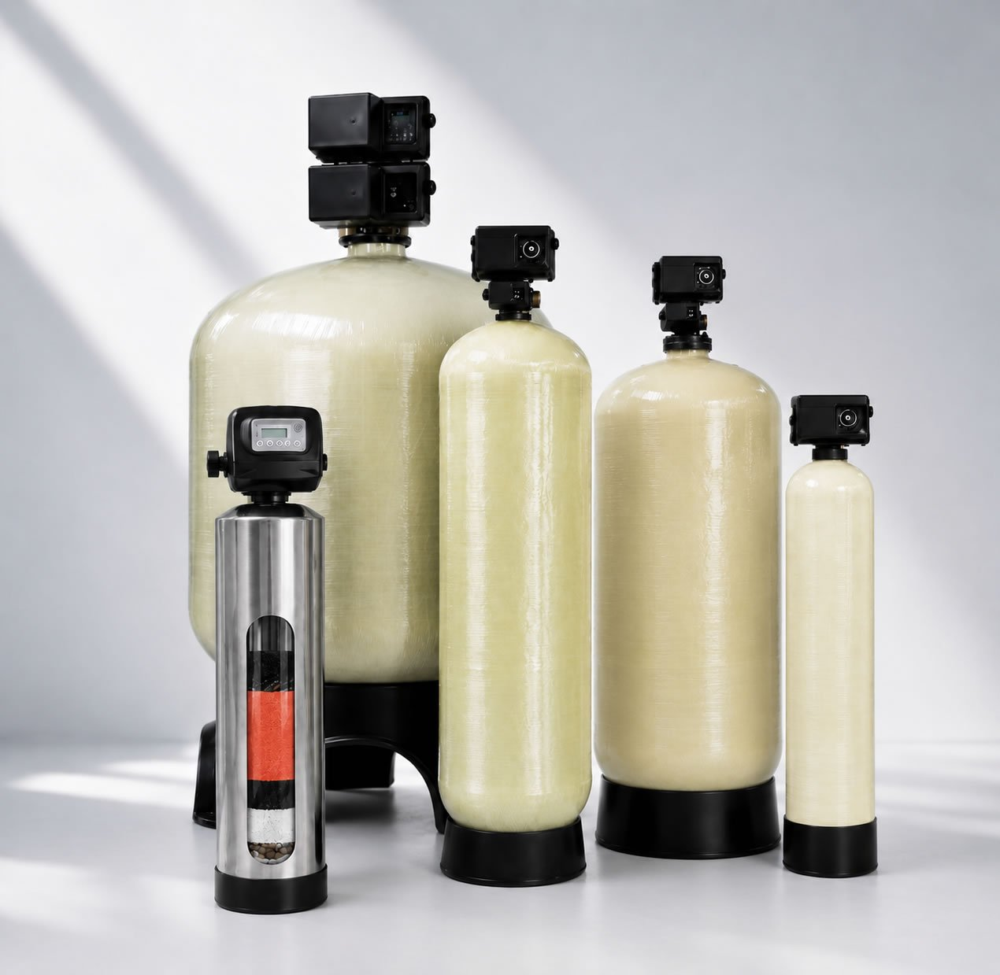
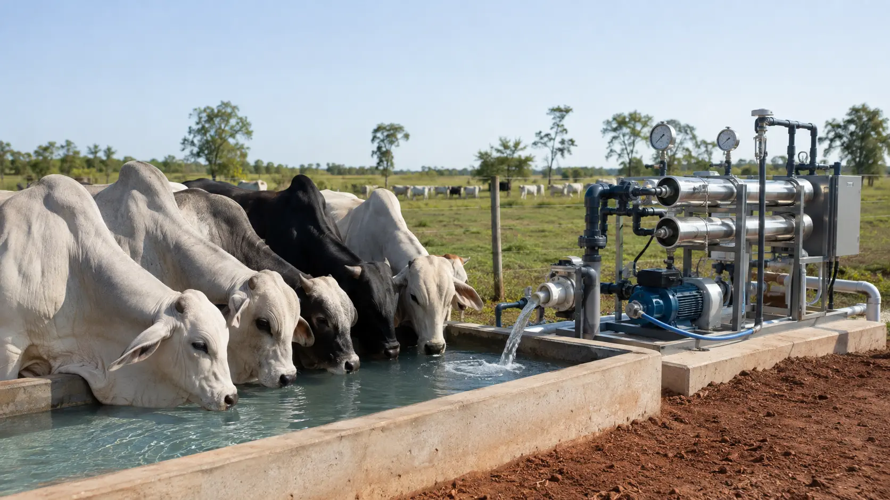

Filtros de agua para tajamares del Chaco Paraguayo
El agua purificada y estructurada utilizando nuestros sistemas de avanzada tecnología funciónal del agua no contiene calorías ni nutrientes por sí misma que puedan engordar directamente al ganado, pero sí influye indirectamente en la ganancia de peso al mejorar la hidratación y la digestión de los animales.
En la producción pecuaria, el término se refiere a sistemas de tratamiento que buscan devolver al agua su estado más puro o "hexagonal". El beneficio real en el engorde ocurre a través de los siguientes mecanismos biológicos:

Agua limpia, el secreto para que el ganado gane más peso.
¿Cómo influye la calidad del agua en el peso del ganado?
Mayor consumo de líquido
El ganado rechaza el agua con mal olor, sabor o contaminantes. Los sistemas que purifican o estructuran el agua mejoran su palatabilidad, logrando que el animal beba la cantidad óptima que necesita (entre el 8% y 10% de su peso vivo diariamente).
Eficiencia en la conversión alimenticia
El agua es el segundo nutriente más importante para el bovino. Una hidratación celular eficiente optimiza la digestión ruminal y la absorción de los nutrientes del pasto o el concentrado, transformando el alimento en kilos de carne de manera más rápida. Mejor agua, mas ingestión de alimentos, mejor rumen, mas producción de carne o leche según el caso.
Mejora de la salud general
El agua tratada reduce la carga de patógenos, parásitos o excesos de minerales duros que causan diarreas y pérdidas severas de peso. Un animal sano gasta menos energía combatiendo enfermedades y más energía en desarrollar masa muscular.
Factores reales que engordan al ganado. Si bien la calidad del alimento es un pilar crítico, el aumento de peso real depende directamente de la energía metabolizable y esta depende de la calidad del agua. El consumo de agua de baja calidad genera pérdidas de peso, un pobre rendimiento del alimento y en general graves efectos en la salud animal.

Combinación de productos de alta tecnología en la ingeniería funcional del agua
Es conveniente para diseñar un purificador de agua para el ganado que a la vez de filtrar sedimentos contolen microbios, bacterias, virus, parasitos.
Para diseñar un purificador que retenga sedimentos, y difierente tipos de impurezas y contarinantes y al mismo tiempo controle la carga microbiana (bacterias, virus y parásitos) sin usar cloro, (el animal receaza agua colmada) la combinación ideal de medios filtrantes de AQUA HUNZA según el tipo de agua a tratar se basa en un sistema de doble, triple o mas etapas, en un sistema integrado.
El principal nutriente del ganado es el agua y su calidad es esencial para una eficiente producción ganadera
Nuestro sistema de tratamiento de agua utiliza una combinación de alta tecnología
NUESTRO SISTEMA DE TRATAMIENTO DE AGUA ÚTILIZA UNA COMBINACIÓN DE ALTA TECNOLOGÍA EN TRATAMIENTOS DE AGUA PARA EL GANADO, SISTEMAS A MEDIDA Y VARIABLE DE ACUERDO AL TIPO DE AGUA A TRATAR
Primera fase
Consiste en una desinfección sin cloro con un material soluble e injectable con una bomba de dosificación para contolar microbios, bacterias, virus, parasitos, etc.
Segunda fase
Es un mineral natural modificado de alta pureza que supera por completo a la arena común en diez veces. Función: Retiene partículas microscópicas y sólidos suspendidos (tierra, lodo, arena, óxido). Ventaja: Logra una filtración física de hasta sub-micras (menos de 3 micras), tiene una capacidad superior de 50 veces de la arena.
Tercer fase
Es un catalizador microvoltaico para adsorción y oxidación de contaminantes, es un medio filtrante avanzado recubierto con dióxido de un elemento modificado estructuralmente. Función: Eliminacion por catálisis, filtración por adsorción y co-precipitación mas de una veintena de contaminantes a la vez eliminando la fuente de generación de bacterias dentro del sistema., ventajas, no tiene contrapartida, es único en el mundo.
Cuarta fase
Otro catalizador para refinar el agua en este paso y asegurar un agua sabrosa para el ganado.
Quinta fase
Una bomba dosificadora inyecta un agente desinfectante equivalente al cloro pero de grado alimenticio. Su función, extraordinaria y única en el mundo, elimina la contaminación microbiológica y evita el contagio de enfermedades transmitidas por la baba que los animales segregan al beber. De este modo, se neutraliza un vector crítico de infección con una efectividad sin precedentes en el mercado.
Desalinizadores de agua para el ganado
Con Aqua Hunza Asegure la rentabilidad y el futuro de su campo transformando el agua salada en un recurso vital de alta calidad. Nuestros sistemas de desalinización eliminan el exceso de minerales que frena el desarrollo de sus animales, garantizando una hidratación óptima que se traduce directamente en una mayor ganancia de peso, un incremento en la producción de leche y una notable reducción de la mortalidad y enfermedades en el rodeo.
Al implementar esta tecnología, usted deja de depender de las lluvias, optimiza la reproducción de sus vientres y protege su infraestructura de la corrosión, asegurando un suministro de agua pura, constante y confiable incluso en las sequías más severas.

Tabla Comparativa de Productividad en Engorde (200 Vacunos por Lote)
El cálculo económico se realiza utilizando el precio Kg vivo referencial de u$s 2,80 por kilo.
En este escenario, el lote con agua purificada pasa de ganar 1,100 kg a un promedio de 1,276 kg por día.
| Indicador de Producción | Lote 1: Agua de Tajamar Natural | Lote 2: Agua de Tajamar Purificada | Diferencia Total a Favor |
|---|---|---|---|
| Ganancia Diaria de Peso (GDP) | 1,100 kg/día | 1,276 kg/día | +0,176 kg/día por vaca |
| Kilos ganados por vaca (120 días) | 132,00 kg | 153,12 kg | +21,12 kg por vaca |
| Kilos totales de carne (200 vacas) | 26.400 kg | 30.624 kg | +4.224 kg de carne |
| Ingreso Bruto Total (u$s 2,80/kg) | u$s 73.920,00 | u$s 85.747,20 | +u$s 11.827,20 |
2 - COMPARATIVA DE PRODUCTIVIDAD EN CRÍA (200 Vacas madres por Lote)
Bebiendo agua sin purificar de tajamar, versus bebiendo agua de tajamar purificada.
Para realizar este cálculo para un ciclo productivo de 12 meses comparando dos lotes de 200 unidades vacunos madres cada uno, se aplican los parámetros promedio de las investigaciones ganaderas como el Plan Agropecuario de Uruguay, INTA de Argentina, Ministerio de Agricultura y Agroalimentación de Canadá, y estudios e investigaciones por universidades alrededor del mundo.
En los rodeos de cría bovina, la calidad del agua de bebida impacta de forma sistémica, ya que la vaca madre tiene un doble requerimiento: mantener su gestación/reproducción y producir suficiente leche para el ternero al pie.
Beber agua de tajamar sin purificar (turbia, bacterias y alta carga biológica) reduce el consumo voluntario de agua de la madre, provocando menor producción de leche, baja tasa de preñez, pérdidas embrionarias/abortos por infecciones y terneros destetados más livianos y vulnerables.
- Lote 1 (Tajamar natural): Preñez del 78%, pérdidas por aborto/mortalidad del 6%, tasa de destete final del 72%. Peso promedio al destete del ternero: 165 kg.
- Lote 2 (Agua purificada): Mayor tasa de celo y vigor. Preñez del 88%, pérdidas por aborto/mortalidad reducidas al 3%, tasa de destete final del 85% (+13 puntos). Los terneros ganan un 9% más de peso gracias a la mayor producción de leche de sus madres, promediando 180 kg al destete.
Tabla Comparativa de Productividad en Cría (200 Vacas por Lote)
El cálculo económico se realiza utilizando el precio Kg vivo referencial de u$s 2,80 por kilo.
| Indicador de Eficiencia en Cría | Lote 1: Agua de Tajamar Natural | Lote 2: Agua de Tajamar Purificada | Diferencia Total a Favor (Lote 2) |
|---|---|---|---|
| Vacas Madres Totales | 200 vacas | 200 vacas | - |
| Tasa de Preñez Real | 78% | 88% | +10 puntos porcentuales |
| Pérdidas (Mermas, Abortos, Vigor) | 6% del rodeo | 3% del rodeo | Se salvan 6 terneros más |
| Tasa de Destete Final | 72% | 85% | +13 puntos de eficiencia |
| Terneros Totales Logrados | 144 terneros | 170 terneros | +26 terneros destetados |
| Peso Promedio por Ternero | 165,00 kg | 180,00 kg (+9%) | +15,00 kg más por animal |
| Kilos Totales de Carne Producidos | 23.760 kg | 30.600 kg | +6.840 kg de carne en pie |
| Ingreso Bruto Total (u$s 2,80/kg) | u$s 66.528,00 | u$s 85.680,00 | +u$s 19.152,00 |
Análisis del Impacto en el Rodeo de Cría
- Producción de Carne Extra: El lote con agua purificada produce 6.840 kilos más de carne que el lote sin agua purificada. Esta diferencia es sustancialmente mayor que la obtenida en el engorde tradicional sin agua purificada.
- Ganancia Económica Adicional: El beneficio de implementar agua purificada genera un ingreso extra de u$s 19.152,00 por ciclo para las 200 vacas madres.
- Efecto de la Merma y Abortos: Al no consumir agua contaminada con coliformes o patógenos de tajamar, el rodeo reduce los abortos considerablemente y evita nacimientos de terneros con "bajo vigor" (que suelen morir en las primeras 48 horas de vida).
- Efecto en el Peso: La vaca que bebe agua limpia consume más materia seca y produce más leche. El ternero aprovecha ese potencial y logra un desarrollo acelerado hacia el destete.
El cálculo de cría contempla un ciclo completo de 12 meses (1 año).
En los rodeos de cría, a diferencia del engorde o recría que se mide en días fijos (como los 120 días del primer ejercicio), los resultados reproductivos y de peso al destete necesitan evaluar el año entero del ciclo biológico de la vaca madre.
Desglose del ciclo de 12 meses
Este periodo de un año abarca las etapas críticas donde el agua purificada influye en el resultado.
Mejorá la calidad del agua de tu producción
Soluciones rurales para tajamares, bebederos, ganadería, tambos, equinos y sistemas productivos exigentes.